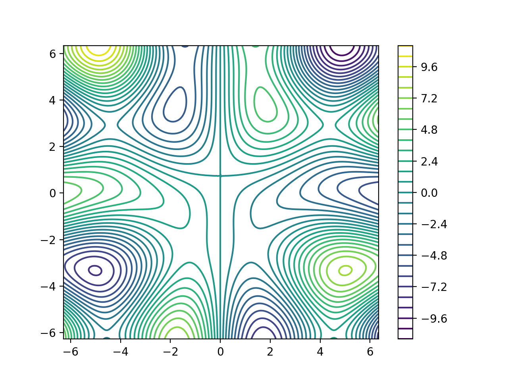

Quick Start
Once you've successfully installed Skywalker, it's time to write your first Skywalker program. Sometimes we refer to such a program as a driver, since it's really just a way to run an algorithm or parameterization that we want to study.
Let's get started.
Step 1: Design an Experiment
For simplicity, we are going to study a function of two variables
over the domain \([-2\pi, 2\pi]\times[−2\pi, 2\pi]\). Our input parameters are \(x\) and \(y\), and our output variable is \(f\). We will sample points on a uniform grid of evenly-spaced \(x\) and \(y\) values.
Suppose we want to sample \(f\) at 100 \(x\) values and 100 \(y\) values, tracing out the surface it represents above the euclidean plane. Here's a YAML file that sets up the calculation of \(f\) on these \((x, y)\) points:
1 2 3 4 5 | |
Line 1 indicates that all values of \(x\) are combined with all values of \(y\). Lines 4 and 5 define 100 uniformly-spaced values between \(−2\pi\) and \(2\pi\) for \(x\) and \(y\). You can find detailed explanations of all these things in the Input Format (YAML) section.
This YAML input file reflects the design of our experiment. Now we just need a Skywalker program that computes \(f\) at each of the points we've specified.
Step 2: Write a Skywalker Program
A Skywalker program creates an ensemble of complete sets of inputs (in this case, the point \((x, y)\) in \(\mathbb{R}^2\)). Each point represents a member of the ensemble. The program loops over each ensemble members \((x, y)\) and computes the output \(f\) for it. Finally, it writes all of its ensemble data (all values of \(x\), \(y\), and \(f\)) to a Python module that can be used for postprocessing. The data in the module is ordered in such a way that each output is associated with its inputs.
Here's a program that does all of these things, written in C, C++, and Fortran. Pick your favorite language, paste the corresponding code into a text editor, and save it to a file with the indicated name.
1 2 3 4 5 6 7 8 9 10 11 12 13 14 15 16 17 18 19 20 21 22 23 24 25 26 27 28 29 30 31 32 33 34 35 36 37 38 39 40 41 42 43 44 45 46 47 48 49 50 51 52 53 | |
1 2 3 4 5 6 7 8 9 10 11 12 13 14 15 16 17 18 19 20 21 22 23 24 25 26 27 28 29 30 31 32 33 34 35 36 37 38 39 40 41 | |
1 2 3 4 5 6 7 8 9 10 11 12 13 14 15 16 17 18 19 20 21 22 23 24 25 26 27 28 29 30 31 32 33 34 35 36 37 38 39 40 41 42 | |
The API section discusses each of the elements in this program. For now, let's just try to build it and run it.
Step 3: Build the Program
Everyone has their own setup for building programs, so let's keep it simple: we'll compile the program and link it against the appropriate Skywalker library in one step:
cc surface.c -I/path/to/include -L/path/to/lib -lskywalker_double -o surface
c++ surface.cpp -std=c++11 -I/path/to/include -L/path/to/lib -lskywalker_double -o surface
gfortran surface.F90 -I/path/to/include -L/path/to/lib -lskywalker_f90_double -o surface
If you use a different compiler, substitute it above. A few things to note:
-
The C++ Skywalker program uses lambda functions, which requires at least C++11.
-
The
-Iflags above indicate the location of the Skywalker headers (skywalker.h,skywalker.hpp) and modules (skywalker.mod) you installed in the Installation section. So if you set Skywalker'sCMAKE_INSTALL_PREFIXto/usr/local, you would use-I/usr/local/include. -
Likewise, the
-Lflags tell the linker where to find the Skywalker libraries. If yourCMAKE_INSTALL_PREFIXis/usr/local, indicate this with-L/usr/local/lib. -
The
-lparameter indicates the library to link your program against. C and C++ programs must be linked againstlibskywalker_double.a, while Fortran programs must uselibskywalker_f90_double.a. If you've configured Skywalker to use single precision floating point numbers with-DSKYWALKER_PRECISION=single, replacedoublewithsingle.
If all goes well, you'll end up with a surface executable.
Step 4: Run the Experiment
Now it's time to see the program in action. Make sure your surface
executable is in the same directory as your surface.yaml input file,
and run it without arguments:
./surface
Hopefully, the program runs to completion, generating a surface.py text
file containing the data. You can open up this file in an editor to see how it
looks. The format of this file is described here.
Step 5: Analyze the Results
Here's a simple Python 3 program you can run in the same directory as your
surface.py file to generate a surface plot of \(f(x, y)\) over the domain
\([-2\pi, 2\pi] \times [-2\pi, 2\pi]\).
import matplotlib.pyplot as plt
import numpy as np
# Extract data from surface.py.
import surface
x = np.array(surface.input.x)
y = np.array(surface.input.y)
f = np.array(surface.output.f)
# Plot the contours of f(x, y).
plt.tricontour(x, y, f)
plt.colorbar()
# Display the plot.
plt.show()
The script uses matplotlib, which you can often install with a command like
pip3 install matplotlib
Run the script to see the plot.
python3 plot_surface.py
Here's how it looks:

That's it. Congratulations--you've successfully used Skywalker to sample a multivariate function over regularly spaced intervals. If you like, you can continue through the rest of the documentation to learn how things work. You can also take a look at a more involved example if that's your style.